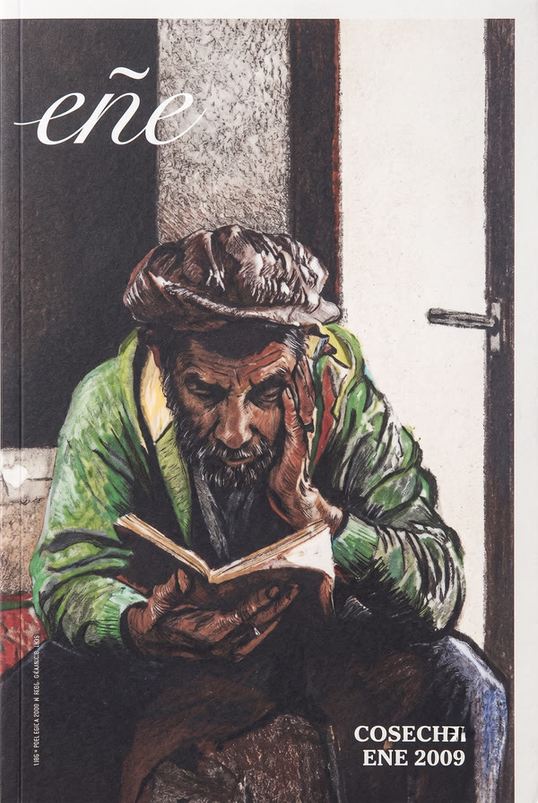

Eñe. Revista para leer
Revista de creación de la editorial La Fábrica, fundada en 2005. De periodicidad trimestral y formato libro, publica relato y ensayo inéditos de autores españoles y latinoamericanos, con la voluntad de «recuperar el placer de la lectura» y tender un puente literario entre España y Latinoamérica. Cada número se ilustra con la obra de un artista invitado.